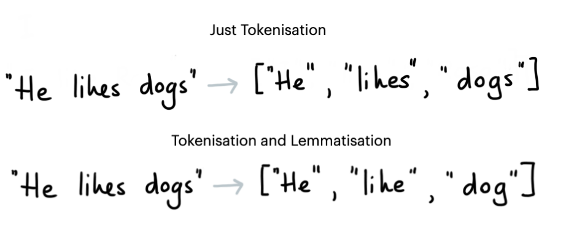
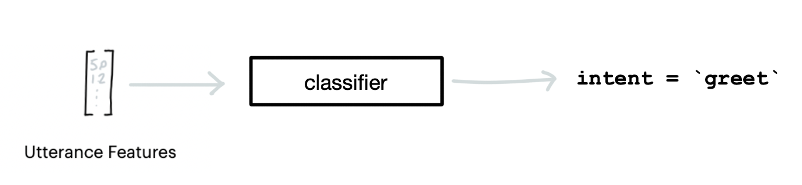
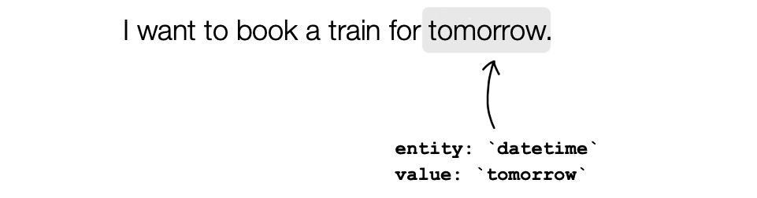

Rasa NLU Examples¶
This repository contains some example components meant for educational and inspirational purposes. These are components that we open source to encourage experimentation but these are components that are not officially supported. There will be some tests and some documentation but this is a community project, not something that is part of core Rasa.
The goal of these tools will be to be compatible with the most recent version of rasa only. You may need to point to an older release of the project if you want it to be compatible with an older version of Rasa.
Compatibility¶
This project currently supports components for Rasa 3.0. For older versions, see the list below.
- version 0.1.3 is the final release for Rasa 1.10
- version 0.2.8 is the final release for Rasa 2.8
Tokenizers¶

Tokenizers can split up the input text into tokens. Depending on the Tokenizer that you pick you can also choose to apply lemmatization. For languages that have rich grammatical features this might help reduce the size of all the possible tokens.
rasa_nlu_examples.tokenizers.BlankSpacyTokenizerdocsrasa_nlu_examples.tokenizers.ThaiTokenizerdocs
Featurizers¶

Dense featurizers attach dense numeric features per token as well as to the entire utterance. These features are picked up by intent classifiers and entity detectors later in the pipeline.
rasa_nlu_examples.featurizers.dense.FastTextFeaturizerdocsrasa_nlu_examples.featurizers.dense.BytePairFeaturizerdocsrasa_nlu_examples.featurizers.dense.GensimFeaturizerdocsrasa_nlu_examples.featurizers.sparse.TfIdfFeaturizerdocsrasa_nlu_examples.featurizers.sparse.HashingFeaturizerdocs
Intent Classifiers¶

Intent classifiers are models that predict an intent from a given user message text. The default intent classifier in Rasa NLU is the DIET model which can be fairly computationally expensive, especially if you do not need to detect entities. We provide some examples of alternative intent classifiers here.
rasa_nlu_examples.classifiers.NaiveBayesClassifierdocsrasa_nlu_examples.classifiers.LogisticRegressionClassifierdocs
Entity Extractors¶

rasa_nlu_examples.extractor.FlashTextEntityExtractordocsrasa_nlu_examples.extractor.DateparserEntityExtractordocs
Name Lists¶
Language models are typically trained on Western datasets. That means that the reported benchmarks might not apply to your use-case. For example; detecting names in texts from France is not the same thing as detecting names in Madagascar. Even though French is used actively in both countries, the names of it's citizens might be so different that you cannot assume that the benchmarks apply universally.
To remedy this we've started collecting name lists. These can be used as a lookup table which can be picked up by Rasa's RegexEntityExtractor or our FlashTextEntityExtractor. It won't be 100% perfect but it should give a reasonable starting point.
You can find the namelists here. We currently offer namelists for the United States, Germany as well as common Arabic names. Feel free to submit PRs for more languages. We're also eager to receive feedback.
Contributing¶
You can find the contribution guide here.